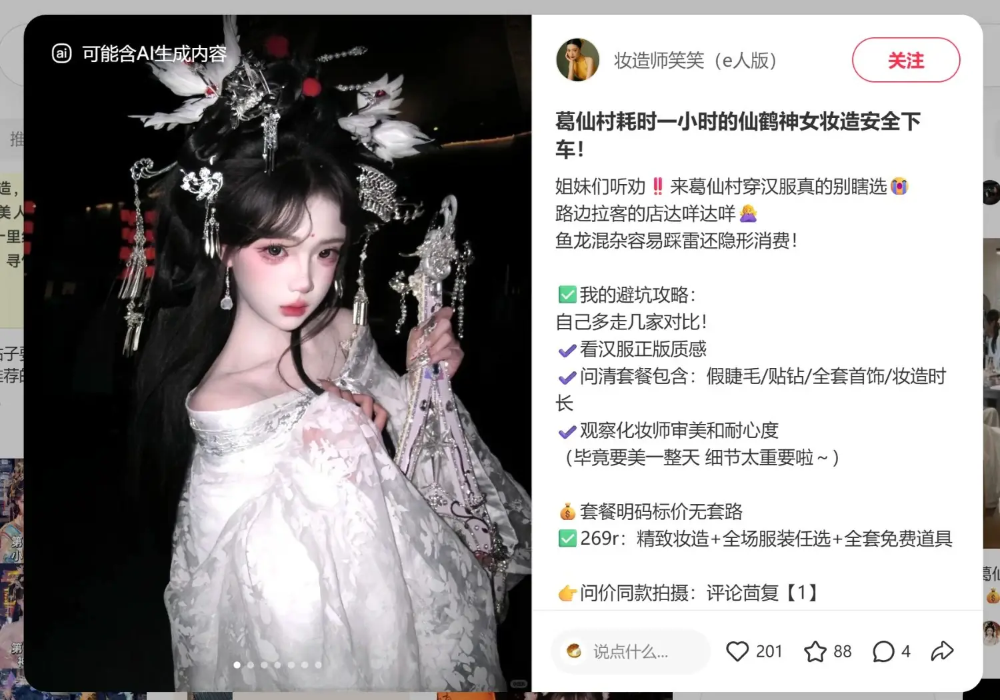

《注册公司经营范围写太满，亏的是你自己》
以「注册公司时想把经营范围全部勾选」情景冲突开场，三大风险编号化呈现，结尾扣词引导评论留资。
钩子前置痛点场景化评论留资配合投放
PORTFOLIO · 新媒体运营作品集 · 2026
新闻学出身，用内容讲故事，用数据要结果。从选题策划、脚本撰写、拍摄剪辑，到多平台运营与聚光投流。
新媒体运营经验
条视频策划与制作
百万级播放爆款
小红书获客率
SCRIPT WRITING
两支财税垂类短视频脚本：一支口播 + 情景的抖音获客款，一支主打转化的视频号广告款——从钩子、卖点到留资，完整可执行。点击「阅读全文」查看完整脚本
以「注册公司时想把经营范围全部勾选」情景冲突开场，三大风险编号化呈现，结尾扣词引导评论留资。
钩子前置痛点场景化评论留资配合投放
28 秒完成「痛点—报价—赠品—行动」四步闭环：以地板价直击小微老板的价格敏感点，再用「免费送四章」资料包拉高到手价值。
价格锚点赠品钩子快节奏卖点投放款
STORYBOARD & RUNDOWN
棚内综艺的全流程执行台本，点击「阅读全文」查看完整内容
开场秀、访谈、方言游戏、观众互动、惩罚环节到结尾合唱，七大板块分钟级推进，每板块预留救场方案与备用包袱。
分钟级时间轴舞台调度灯音 cue 点
以多元才艺表演与现场互动为核心，涵盖魔术、相声、广场舞、脱口秀及山歌等节目。通过选手展示、主持互动与结果揭晓串联全场，最终颁发“风采笑花”与“人气笑花”奖项。
多元才艺展演主持互动现场评选
DATA & GROWTH
从日更笔记到聚光投放，内容与投流双轮驱动的增长实录。以下为代表作品数据概览，完整后台数据可提供截图佐证。
累计笔记产出（日均 10+ 篇）
单篇最高点赞
百赞爆款笔记
聚光投放客单成交率

基于后台曝光与转化数据持续调优定向模型：本地 + 创业兴趣人群起步，逐步收窄至高意向标签，精准捕获目标客群。
干货图文与真实案例笔记双线测试，按点击率与互动成本动态分配预算，跑通「内容 + 投流」双驱动模型。
评论区扣词引导 → 私信自动回复 → 企微承接转化，全链路监控消耗与成交数据，客单成交率做到 64%+，投放 ROI 持续提升。
ABOUT ME
新闻学本科，1.5 年新媒体运营经验——兼具传统媒体内容生产与新媒体平台运营能力。
从电视台的新闻与综艺，到财税垂类的抖音与小红书，我始终在做同一件事：让内容被看见，让数据说话。
我具备从选题策划、脚本撰写、拍摄剪辑，到多平台分发、数据分析、聚光投流的全链路实操能力——一个人，就是一条完整的内容流水线。
我相信好的运营 = 网感 × 敏感 × 数据感：对内容有网感，对热点有敏感，对数字有感觉。